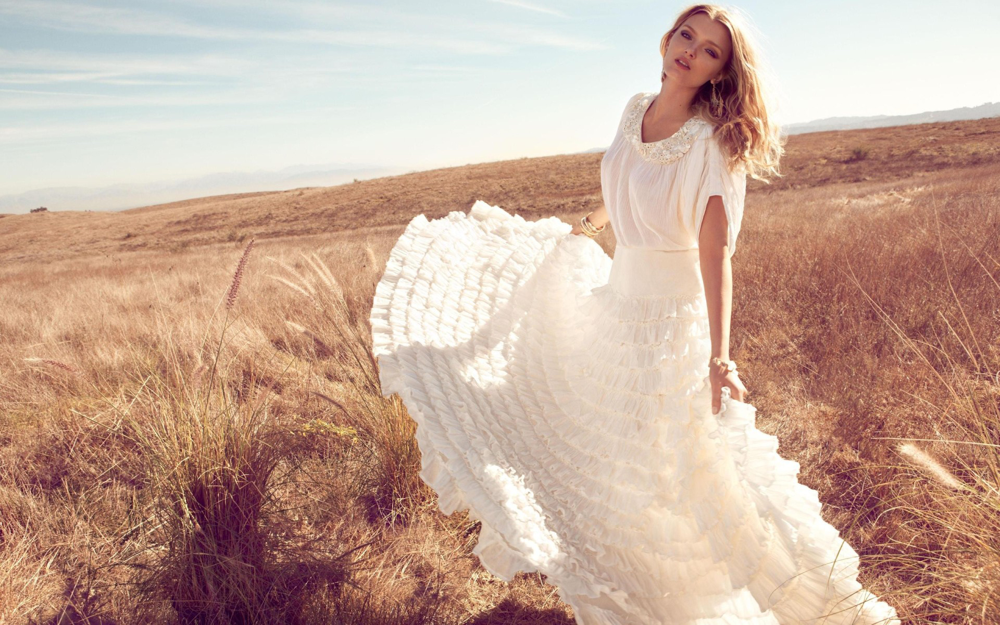
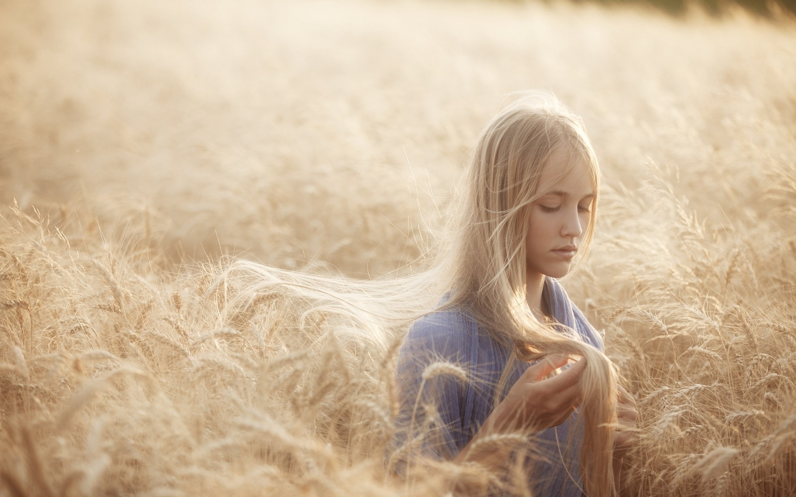
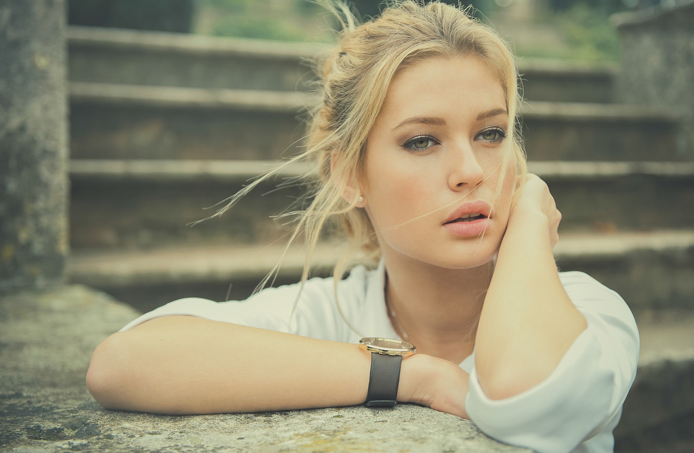
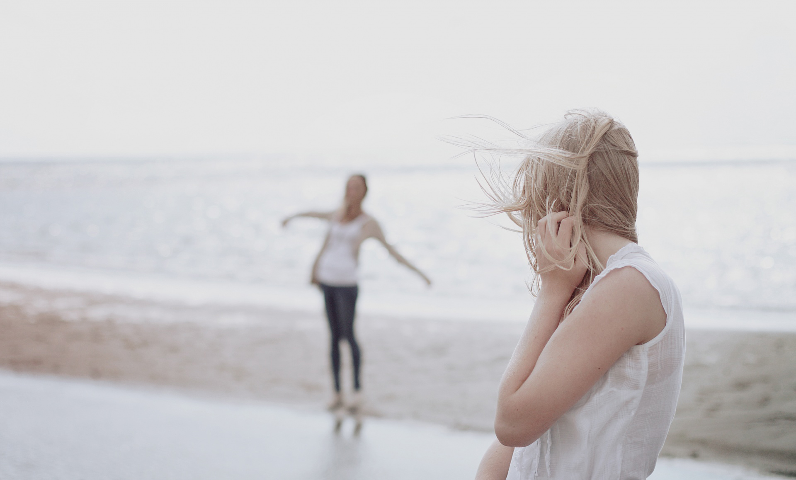

Як фотографувати людей
Портрет в інтер'єрі.
Роблячи портрет в інтер'єрі ви повинні в першу чергу пам'ятати про взаємодію навколишнього середовища. Це може обстановка кімнати, міський ландшафт, або ще гори та пляж. Роблячи таку фотографію ви повинні пам'ятати про те, що об'єкт вашої зйомки повинен находитися у взаєминах з територією.
Місця для зйомки портретів. Взагалі для зйомки портрета можна використати будь-яке місце, головне щоб об'єкт вашої зйомки відчував себе комфортно в такій обстановці. Вибираючи таке місце вам необхідно звернути увагу на оточуючу обстановку, яка буде давати можливість об'єкту вашої зйомки прийняти вигідну позу і розслабитися. В першу чергу зіставте розмір об'єкта в кадрі. Об'єкт зйомки потрібно розташувати якомога ближче до фотокамери, бо набільш поширеною помилкою при зйомці портретів є неповний кадр, коли навколо об'єкту зйомки є багато вільного простору по обох боках. Спробуйте провести експерименти з різними масштабами - заповніть тільки чверть, третину, або половину кадру. Також ви можете спробувати зробити фотографії на повний зріст, але таким чином, щоб у кадрі об'єкт зйомки займав лише одну п'яту від загальної висоти знімка.
Гарним місцем для зйомки портрета може бути околиця міського парку або узлісся. Таке місце буде приємним не тільки для вас, але і для об'єкта зйомки. У вас з'являється можливість зробити вибір між чистим небом і чудово освітленою обстановкою, а також з більш затемненими ділянками під масивом листя, які не пропускають падаюче згори світло. Освітлення буде найкращим, якщо ви зробите декілька кроків у глиб парку чи лісу.
Класичний портрет.
У класичному портреті фон не являється головним питанням і таку зйомку можна проводити майже скрізь. Коли ви будете робити зйомку з великою діафрагмою, щоб зробити фон розмитим, найдіть таке місце, де освітлення і колір фону будуть акцентувати всю увагу на об'єкті зйомки.
Розташування фотокамери.
Зйомка класичного портрету, як правило, проводиться при розташуванні фотокамери на пару сантиметрів вище ніж очі об'єкта зйомки. Таким чином, голову та тіло об'єкта ви будете бачити під потрібним кутом, а очі будуть перебувати на такому рівні, щоб їх можна було правильно розташувати у кадрі. Однак це залежить в першу чергу від розташування фотокамери. Якщо ви будете робити зйомку знизу до гори, то візуально збільшується зростання об'єкта, а також може створитися невдале освітлення та тіні, якщо ви будете фотографувати на вулиці. В такому випадку може також вийти інший, кольоровий фон позаду об'єкта, такий як крона дерева, або як небо. При високій точці зйомки, коли ви робите зйомку зверху до низу, ви маєте можливість надати стрункого і легкого вигляду повній людині.
Краще всього робити фотографії людей на відстані від 2,5 до 3,5 до камери. Якщо ви будете підходити ближче, то ніс об'єкта буде видаватися більшим, а вуха меншими. Відійдете на більшу відстань, то зникне зв'язок між фотографом та об'єктом. При великій відстані об'єкт зйомки трохи спотворюється так званим візуальним стисненням, яке можна отримати при відсутності видимих вказівок на об'єм та глибину простору.
Якщо у вашому кадрі будуть розташовані лише очі об'єкта або голова та плечі, то вам краще всього залишатися на відстані, яка була вище вказана. На повний зріст людей можна фотографувати і з більшої відстані.
Виконуючи класичний портрет слід використовувати об'єктив з фокусною відстанню у два рази більшою, ніж штатний об'єктив вашої фотокамери. Для фотокамер формату 35 мм така фокусна відстань буде в межах від 85 мм до 135 мм ( короткофокусний об'єктив). А якщо ваша камера має зум, який зможе покрити таку відстань, то вам дуже повезло.

Короткофокусний телеоб'єктив буде підходити вам з урахуванням наступних причин. Він дає змогу відображати обличчя людей з мінімальними спотвореннями. Також він дає змогу заповнити кадр, при цьому не наближатися дуже близько і тим самим не порушується комфорт об'єкта зйомки. Зум, який має набагато більшу відстань, а саме від 135 мм до 150 мм, дасть вам змогу вловити більш тонкі деталі і при цьому вам не доведеться підходити до об'єкта зйомки.
Роблячи зйомку з максимальним значенням діафрагми створюється невелика глибина різкості, а це вам знадобиться для того, щоб відділити об'єкт від фону.
Поза класичного портрету.
В класичному портреті пози можуть бути різноманітними. Об'єкт може дивитися прямо в об'єктив або ще кудись, також він може дивитися на глядачів або захоплено читати книжку. Найкраща фігура для плечового портрета (голова та плечі), це коли людина сидить. В цьому випадку чоловік має сидіти на сидінні, яке не має ніяких відволікаючих деталей, це може бути спинка крісла або підлокітник.
Освітлення в класичному портреті. В залежності від того, як ви будете освітлювати об'єкт, буде дуже важливим для сенсу та настрою самої фотографії в цілому. Наприклад, якщо ви хочете зробити портрет замисленої, зануреної в себе людини, то спробуйте встановити освітлювальні прилади збоку. Таке освітлення надає своєрідні ефекти. Находячись в приміщенні спробуйте також фотографувати при природному освітленні. Тут вам напевно знадобиться штатив, бо прийдеться використовувати тривалі експозиції. Світло, яке буде падати з вікон дасть вам можливість створити досить цікаві кадри.
Приймаємо позу.
Одним із нюансів портретної зйомки, який цілковито залежить від фотографа, є вміння фотографувати людей у комфортній та природній позі. В більшості випадків люди напружуються і роблять зі своїми тілами дивні речі, коли ви просите зайняти відповідну позу щоб зробити знімок. Якщо ви вже спланували яким чином буде виглядати майбутнє фото, то в першу чергу ви повинні пояснити об'єктам зйомки, що вони повинні зробити, щоб надати своїм тілам більш природного вигляду.
Мова тіла.
В більшості випадків людина виглядає набагато краще, якщо не знімати їх прямо "в чоло". При такій позі тулуб та плечі будуть видаватися широкими по відношенню до голови. Виконуючи фотографію збоку також можна створити ефект непропорційно малих плечей.

Коли ви будете поправляти позу людини, то вам необхідно буде попросити її повернути тулуб трохи вбік від камери, приблизно на 15-20 градусів. Невдала поза може бути помітною, а в деяких випадках її буває важко зауважити на фотографії. Створення натуральних та реальних кадрів буде залежати від вас, наскільки правильно ви вибрали оптимальний кут зйомки та освітлення, які будуть найкращим чином передавати позу об'єкта .
Найбільш часто зустрічаються наступні проблеми з позами об'єктів при зйомках:
- Згорблені плечі. Ця проблема є спільною як для чоловіків так і для жінок. Це можна виправити наступним чином - треба попросити людину щоб уперлася плечима до стіни, а живіт виставити у напрямку фотокамери. Така поза дасть можливість випрямити спину і відкриє груди, при цьому призведе в необхідні пропорції тулуб та талію.
- Сутулість. Така поза дещо відрізняється від згорблених плечей, так як при такій позі все тіло нахиляється далеко вперед. Виправити таку позу можна порадити людині щоб вона уявила собі, що до її голови прив'язана мотузка, яка опущена згори і злегка підтягує її.
- Підібране підборіддя. Така поза найбільш властива мужчинам. Вони підбирають підборіддя таким чином, що він дотикається до самої шиї, і шия в такому випадку видається занадто короткою. В таких випадках вам слід попросити людину щоб вона направила кінчик свого носа у фотокамеру - це дасть можливість відновити природне положення підборіддя і при цьому він не буде видаватися вперед.
- Виступаюче підборіддя. Цю позу досить легко виправити. Необхідно попросити об'єкт зйомки підібрати підборіддя або направити лоб у фотокамеру.
Проблеми з позами та також іншими подібними моментами можна вирішити за допомогою знаходження інших кутів зйомки та відповідного освітлення.
Про очі.
Характерною ознакою портретів є те, що на них чітко зображені два ока об'єкта, незалежно від того чи дивиться він прямо в об'єктив або десь вбік. Таке правило являється класичним для портретного жанру. Така композиція буде приємною глядачам, так як вони в першу чергу очікують побачити на портреті очі.
Правило №1 - білки очей потрібно робити видимими тільки в тому випадку, якщо ваш об'єкт зйомки буде дивитися вбік. Але ви повинні пам'ятати, якщо буде занадто багато білого, то погляд буде насторожений. Також невдалою буде позиція, коли голова об'єкту зйомки буде повернена у бік фотоапарату, а очі його будуть дивитися в об'єктив.
Про руки.
Вигляд рук у кадрі може створити або навіть зруйнувати рівновагу на фотографії. Класичним варіантом є момент, коли об'єкт зйомки тримає руки біля обличчя. Спробуйте провести ряд експериментів, однак не зупиняйтеся на якомусь одному варіанті, хіба що в тому випадку, коли руки не являються частиною образу цієї людини, її професії чи якогось її захоплення.c
В більшості випадків кисті рук та пальці будуть гарно виглядати, якщо робити зйомку трохи збоку, а не прямо. Щоб створити більш приємний вигляд у кадрі попросіть об'єкт зйомки щоб він уявив собі, що він тримає грубу кредитну картку між великим та середнім пальцями. Після цього поверніть кисті рук таким чином, щоб долоню або зап'ястя не було видно.
Також деякий вплив на фото можуть надати розташування ніг або рук. Наприклад, роблячи портрет жінки на повний зріст попросіть стати її у так звану третю позицію "Т". Це широко відома балетна поза, коли одна стопа буде дивитися на фотокамеру, а сама п'ята розташовується по середині другої стопи. Для більш вільної пози може підійти будь-який варіант, головне щоб ваш об'єкт стояв вигідно та красиво. Позицію "Т" використовують в основному для жінок, чоловіки в більшості випадків стоять направивши стопи ніг прямо.
Як зробити гарні знімки людей.
Більшість фотографів об'єднує той факт, що вони фотографують людей частіше, ніж що-небудь інше. Роблячи зйомку ви би могли зняти декілька кадрів і на цьому зупинитися. Але коли ви приділите своїй фотосесії більше уваги, замислитеся над тим, що ви хочете сказати про об'єкт зйомки, то в кінцевому підсумку ви отримаєте набагато кращий результат.

Також немає нічого поганого в зроблених швидких фото. В дійсності це буває єдиним способом, коли ви зможете сфотографувати людину, яка не хоче йти на контакт з вами. Але зрозуміло одне, що фотографії людей виходять набагато кращими, якщо фотограф, а в даному випадку, це ви, зуміє наладити добрі відносини з об'єктами зйомки. Тоді не зважаючи на обставини, в студії чи на вулиці, формально чи неформально, але ви зможете отримати чудові кадри, хоча досить часто зовнішні умови зйомки можуть впливати і на вас.